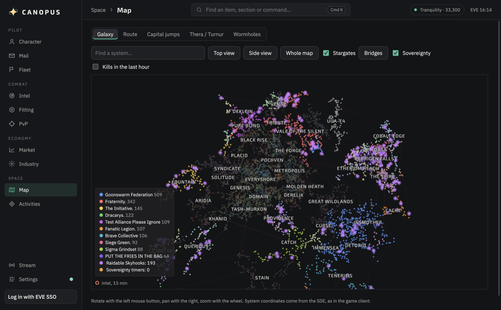
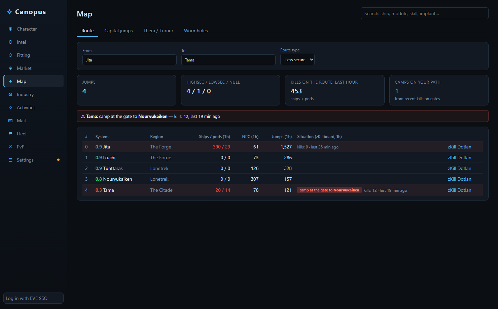

New Eden at real coordinates
3D map and travel
Rotate and zoom New Eden at the real coordinates from CCP’s game data, with security colours, stargates, recent kills and your routes.
The galaxy, live
Kills in the last hour as a glow, routes (secure, shortest, low and null) drawn on the map with the busiest systems on the way, set in game with one click.
- Alliance jump bridges — paste the list (plain or Dotlan format), route through them
- Avoided systems and notes per system; avoided systems are left out of every route
- Capital jump range — a sphere around any system and every system it reaches
- Fresh intel reports and your current system marked on the map

Sovereignty
Systems coloured by the alliance holding them, raidable Skyhooks and sovereignty timers marked.

Route safety and travel
Every system on the route with security, ship and pod kills in the last hour and gate camps from zKillboard; set the destination in the game with one click.
- Hauling plan — a shopping list split into trips by hold size and ISK at risk
- Jump planner for capitals and black ops: range with your skills, fuel and jump fatigue
- Wormholes — any hole type and how many of your ships can pass; Thera and Turnur connections from EVE-Scout

Fight the battle before you undock
Free, no ads, no subscriptions. Windows, macOS and Linux — and a separate app for iPhone and iPad.